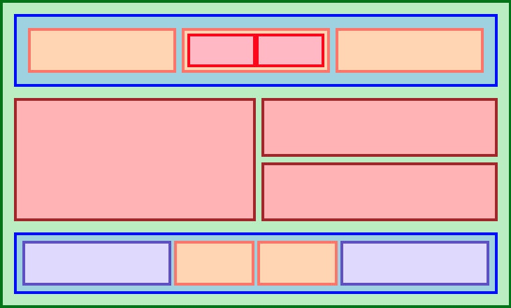

A small site to dump stuff from my Odin Project course.
Flexboxes help us organise information
into rows or columns. They will grow or shrink (aka flex) based on
defined rules. Flex containers are any element with the property:
display: flex
on it. A flex item is anything INSIDE a flex container.
Flex containers can also be flex items, allowing the
flex item to contain its own flex items, or children.
Below is an example from The Odin Project which shows how flexboxes can be nestled into one another in order to create responsive and flexible layouts.
